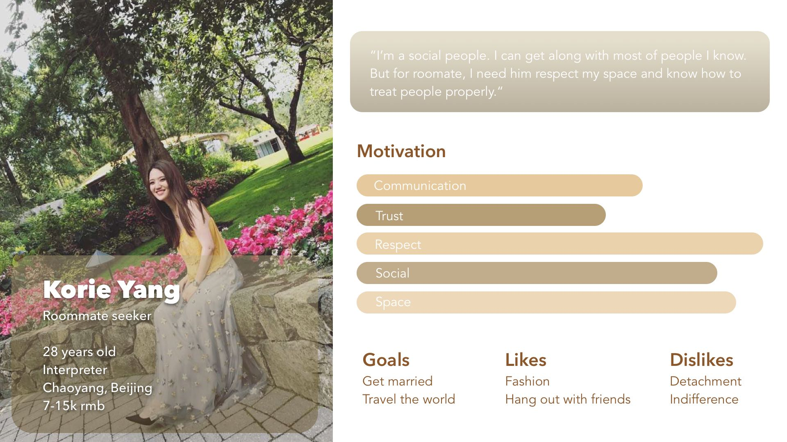
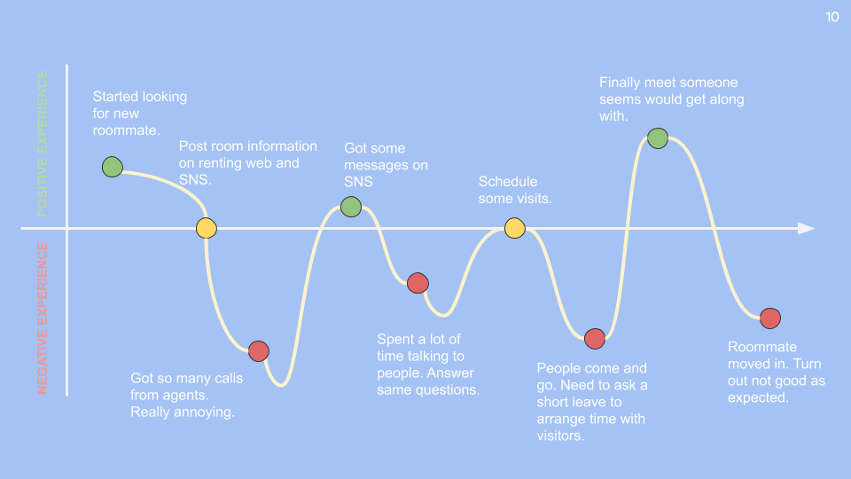

Roommate Finder Application
Overview
A few trends of note: 54% of the world’s population live in urban communities, the average marriage age for men is 29 (up from 26 two decades ago) and for women, it is 27 (up from 23 in the same time period). Given these trends, city dwellers tend to spend most of their twenties living with roommates. Finding and keeping a good roommate, however, gets harder as more people swarm into cities.
Beijing is the 11th largest city in the world, the population of Beijing has also been growing at breakneck speed. At 2018, the population of Beijing has reached to 21.45 million. The huge numbers of internal migrants brought a big challenge to the house renting market. Therefore, people need improved services of looking for a place to live and people to live.
People who live their 20’s mostly share the living place with roommates. Finding and keeping an ideal roommate get harder as more people swarm into cities.
Target users
- 18-30 years old
- Unmarried people
- Living in Beijing or other big cities in China
"People live their 20’s mostly share living place with roommates. Finding and keeping ideal roommate get harder as more people swarm into cities."
Interviews
I have run 5 face to face interviews with people who fit my target user's traits. Extract key interviewees' insight, I built a persona. Interview documents could be checked here.
Persona
Journey map
Ideation

By refining the ideas from crazy 8 ideation exercise, I came up with 3 features would potentially solve the problems.
People nearby - Users can see who is using the app seeking for room or roommate around them. Arrange a meet up asap.
Event and party - Users can create events and parties based on their hobbies. Like people love dogs can go to a dog party to find an ideal roommate. Comic fans can meet up with other fans then become roommates.
SNS and verify - Users could connect to their SNS and verify identity. These ways for people build up a better reputation of safety and trustworthy.